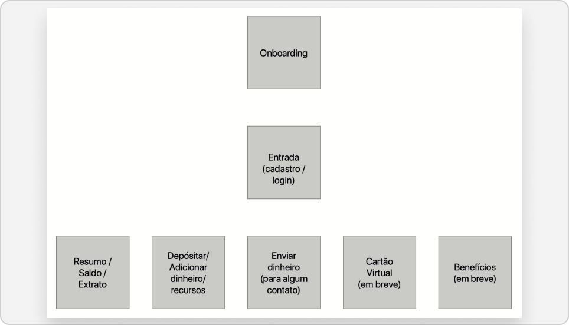
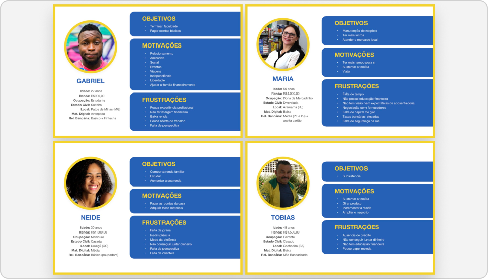
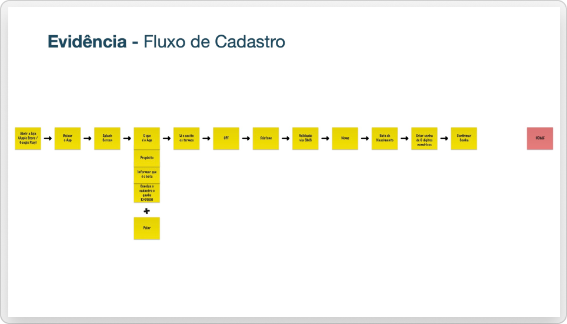
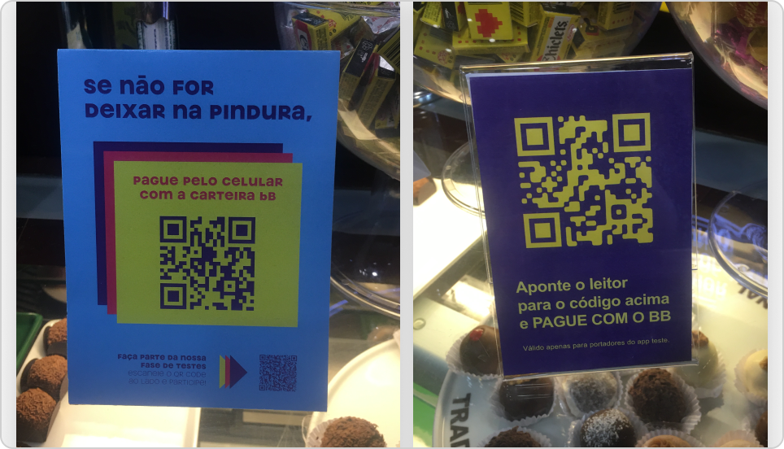

CASE 6 · BANCO DO BRASIL · 2019
Strategic Design in Fintech
How Designing Banco do Brasil's Digital Wallet Connected Business and Engineering
- Role
- Senior Product Designer
- Company
- Stefanini
- Client
- Banco do Brasil
- Duration
- 2 months
- 5 flows
- Critical flows, designed in Discovery and launched in the app stores
- 2 Months
- Designing flows and business rules in Discovery
- +10 Areas
- Working together on a single product
30-second summary
Problem
BB needed to conceive from scratch a simple digital wallet for new audiences, reconciling banking security with a frictionless experience, with more than 10 areas involved.
What I did
I ran Discovery and information architecture: I facilitated workshops, consolidated personas, mapped sign-up, login, cash-in and payment flows and took the Beta version to tests in local shops.
Result
The five critical flows I designed (onboarding, sign-up, login, cash-in and payments) reached the version launched in the app stores, with exceptions and security rules solved before coding.
The solution
A digital wallet to pay and get paid on mobile, with no fees
Carteira bB let people open an account with just their CPF (taxpayer ID) and an SMS code, sign in with a 6-digit password, add money by bank transfer, and pay bills and QR codes with the camera.
The flows I designed in Discovery reached the version launched on the App Store and Google Play. The app is no longer available in the stores.


Key decisions
One user per device
- Instead of
- Asking for a full login on every visit.
- Why
- To protect banking secrecy without making it slow to come back to the app, a rule defined together with Information Security.
- Outcome
- Fast login for returning users and compliance with the bank's rules.
Personas on the squad's wall
- Instead of
- Leaving the personas in digital folders.
- Why
- Digital artifacts were forgotten, and engineering made decisions without looking at the user.
- Outcome
- Engineers started checking users' pain points and habits when making code and architecture decisions.
Testing the QR code in real shops
- Instead of
- Validating scanning only in remote tests.
- Why
- QR code payments happen at the counter, in a hurry, with varying light and distance.
- Outcome
- Friction from lighting, distance and the cashier's routine surfaced before launch.
Overview and challenge
With payment methods evolving fast and the need to reach new audiences, unbanked or simply looking for simplicity, Banco do Brasil started building Carteira bB, its digital wallet. The product required a direct value proposition centered on fast, free and intuitive mobile operations (“Hypersimple”, “With Benefits and No Fees”).
The big challenge was to conceive a brand-new product from scratch, reconciling strict banking security and financial secrecy rules with a frictionless experience. Beyond the technical and regulatory complexity, it was crucial to align Technology, Business, Security and Product in an agile Discovery cycle, so the whole multidisciplinary team shared the same user-centered vision.
My role
As a Senior Product Designer allocated by Stefanini, I worked on the front line of Discovery and Information Architecture for Carteira bB. I led facilitation and cross-functional co-creation with POs, engineering and business specialists, turning strategic guidelines and compliance requirements into highly usable journeys and screens.
My work went beyond delivering screens: I took an active role in design management and in building design culture within the squads, using visual UX tools to engage developers and connect Banco do Brasil's business goals to people's real pain points.
Activities
Below are some of the activities and stages I carried out in this case.
Competitive and Market Analysis
I analyzed the digital payments market and competing solutions to structure the experience requirements.Sitemap
I structured the first version of the app's information architecture and sitemap during collaborative workshops with the team.



Structural and Conceptual Mapping
I mapped the first structural flows (then named under the exploratory concept “Uóleti”, in Alpha/Zero versions) to organize the visual hierarchy of balance, “Pay” and “Request” shortcuts, statement and account settings.Session Governance and Error Prevention
I structured account sign-out governance and navigation error handling, balancing protection against unauthorized access with clarity for the customer.Consolidating Strategic Profiles
I consolidated field research and interviews into strategic personas that summarized the wallet's priority profiles.


Visual Management and Active Empathy
To keep the artifacts from being forgotten in digital folders, I printed the personas and put them on the walls of the squad's workroom.Bringing Engineering into the Design Culture
This visual management changed the technical team's routine: engineers started consulting users' pain points and habits when making code and system architecture decisions, which earned strong recognition and appreciation for the design work.


Workshop Facilitation and Critical Journey Mapping
The app's structural foundation was born in co-creation sessions. I facilitated and took an active part in flow meetings with dozens of stakeholders (Business, PO, Development and Security) to map the Information Architecture on whiteboards with sticky notes.Aligning Onboarding and Sign-up
I ran flow-mapping sessions with sticky notes to align the happy path and sign-up exceptions, identity validation by SMS and creation of a 6-digit numeric password.



Balancing Security and Experience
I facilitated the definition of joint rules between Design and Information Security, enabling the “one user per device” model to safeguard banking secrecy without hurting a fast return in the login flow.Designing the Cash-In and Cash-Out Cycles
I designed the complete Cash-In journeys (instant generation and copy of branch, account and CPF details for transfers) and Cash-Out. For bill and utility payments, I designed screens covering complex variables: camera scanning, manual code entry, detailed payer data validation and password authentication (PIN pad), ending in the successful transaction receipt.


Evolution
To test and improve the ergonomics of interactions and action buttons, I created clickable low-fidelity wireframes.Low-Fidelity Mockups
To enable the start of development testing, I created low-fidelity app mockups for the app stores.

Interface Refinement
Based on the vibrant visual identity defined for the brand (yellow, purple and blue), we moved on to high-fidelity interfaces. We created a friendly, engaging onboarding flow that opens with the prompt “então, vamos começar?” (“so, shall we start?”), while validating the visual feedback of transactions to ensure the clarity needed in the first rounds of usability testing.

Field Validation in Local Businesses
To evaluate the app in practice, we took the Beta version to real points of sale, such as local shops and bakeries. We created physical displays with QR codes and catchy lines, such as “Forgot your wallet at home? Pay with your phone using Carteira bB”. This in-person validation with test participants provided crucial insights into user behavior and the usability of QR code scanning in the routine of busy shops.


Results
What my work caused
Critical flows in the launched version
Onboarding, sign-up, login, cash-in and payments, designed and approved in Discovery, reached the version published in the app stores.
Less rework in code
Mapping exceptions, failures and banking restrictions in advance (such as one device per CPF) avoided refactoring and ensured compliance and security.
User-focused engineering
The personas on the wall brought engineering closer to customers' real needs and created a partnership aligned with the value proposition.
Approval before development
Documentation and prototypes were validated by the Technology, Business and UX boards before development started.
What happened to the project
Launched and later removed from the stores
Carteira bB was launched on the App Store and Google Play. The app is no longer available. I have no adoption data, because I left the project after Discovery.
Learnings
Cross-functional Discovery Speeds Up Time to Market
Co-creating conceptual wireframes on the whiteboard with engineers and the Product Owner prevents rework and speeds up validation. This early alignment ensures the high-fidelity delivery is technically feasible and fully aligned with business goals.
Physical Artifacts for Management and Culture
Putting personas and journeys on the walls is visual management and influence. Bringing user pain points into engineering's daily routine builds empathy in technical decisions, brings business closer and strengthens respect between areas.
Security and Compliance as Design Guides
In traditional banks, regulatory constraints such as banking secrecy and the one-device-per-account limit should guide design. UX's role is to turn security requirements into simple, transparent steps that build user trust.
Field Testing in Phygital Contexts
Testing QR codes in real shops (cafés and bakeries) reveals friction that remote tests do not anticipate. Lighting, camera distance, hurry and the cashier's routine demand extremely fast responses from the interface.